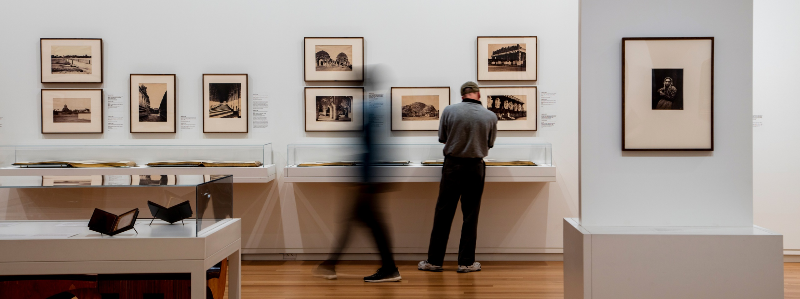
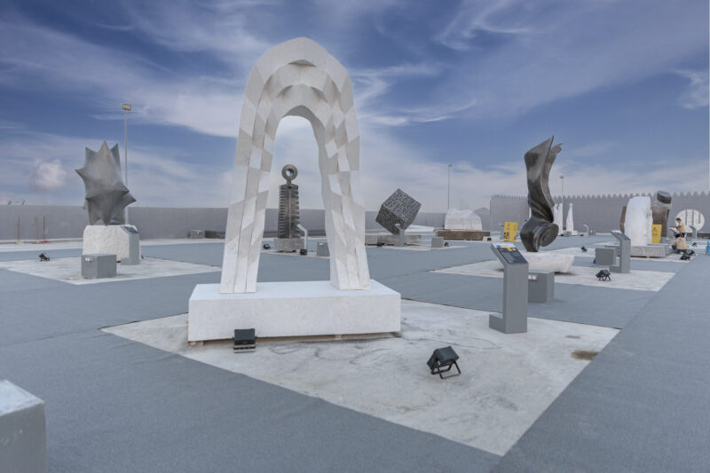
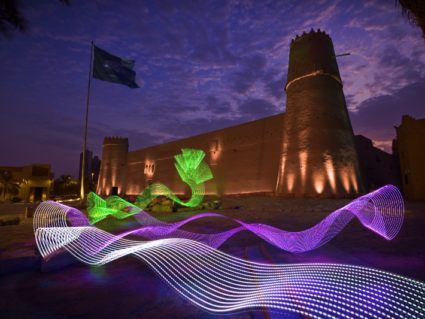

Art and Museums

Go to museums
TUWAIQ SCULPTURE
From 08/01/2023 to 10/02/2023

Tuwaiq Sculpture is an annual sculpture symposium that brings local and international artists together to create public artworks in a live setting. Through an interactive program of workshops, school visits, and talks, Tuwaiq Sculpture engages diverse communities and bolsters cultural exchanges. The symposium culminates in an on-site exhibition, with the sculptures enriching the Riyadh Art collection and later becoming a permanent feature of the Saudi capital’s urban fabric.
The theme of 4th Tuwaiq Sculpture is Energy of Harmony, which reflects on the fundamental characteristic of human existence – the ongoing synthesis of the opposing forces. To attain harmony means to maintain equilibrium, balancing between variation and repetition, sparsity and abundance, inactivity and vibrance. Energy of Harmony establishes points of connection and focus within the urban environment of Riyadh, giving a heightened awareness of co-existing structures, voices, and patterns.
NOOR RIYADH
From 03/11/2022 to 04/02/2023

Noor Riyadh is a citywide annual festival of light and art that nurtures creativity, promotes talent and delivers awe-inspiring experiences.
The exhibition ‘From Spark to Spirit’ examines light as a signal of change and the role it plays in shaping our relationship to the world. Experience it now until February 4, 2023 at JAX District.
Go to top of the page